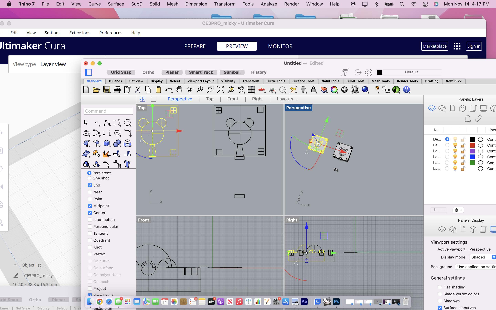

A6: Molds/h1>
Click on the images below to download the rhino files:

I did a draft angle analysis on the micky mouse shapeto get an idea of where to cut it off for the mold and created a ribbion offset to find the realtive parting of the shape c
I then created a square to surround the shape and create sprues and keys for the molding

I had some issues previously printing the molds, and I applied a mesh to the molds if it would change anything
Here are the molds and cura which have no issues printing, and the final product.